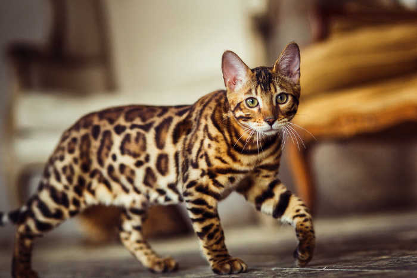
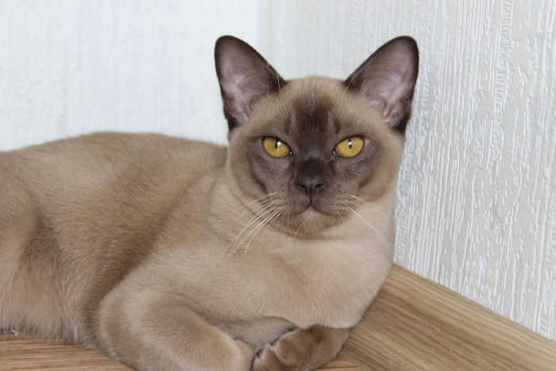

Всё о кошках и котах
Какая порода кошек подходит твоему знаку зодиака?
20 декабря 2023, 19:31:12
Если вы хотите завести кошку, но не знаете, какую породу выбрать,
можно поискать решение в астрологии, которая подробно описывает ваш характер.
Вопреки распространенному мнению, кошки разных пород очень сильно могут отличаться не только внешне, но и по характеру. Тот, кому подойдет сфинкс, вряд ли уживется с персидским котом. Вы когда-нибудь размышляли, какая порода кошек ваша? К счастью, можно каждому подобрать свою кошачью породу, основываясь на знаке зодиака.
ОВЕН - британская короткошерстная кошка
Овны - прирожденные лидеры и неугомонные исследователи. Иногда они бывают агрессивными, но такое поведение является защитной реакцией. Если бы Овен был кошкой, то обязательно британской короткошерстной.
ТЕЛЕЦ - сиамская кошка
Тельцы - сильные и независимые личности, которые при желании могут быть очень упрямыми. Для них сдержать слово - дело чести. Предательство в мире Тельцов - самый большой грех. Они надежные, как сиамские коты.
БЛИЗНЕЦЫ - персидская кошка
Близнецы всегда находятся в погоне за мечтой. На ее достижение они готовы бросить все силы. Рожденные под этим знаком люди, амбициозны и очень энергичны. И этим Близнецы напоминают персидских котов.
РАК - рэгдолл
Люди, родившиеся под этим знаком, загадочные и недоступные. Они могут быть одновременно рационалистами и мечтателями. Их непредсказуемость очаровывает. Если бы Раки были котами, то принадлежали бы к породе рэгдолл.
ЛЕВ - мейн-кун
Львы - одновременно нежные и воинственные личности. Они могут отчаянно защищать своих близких, будучи совершенно безразличными к тем, кого ненавидят. Также Львы не обделены состраданием. По характеру они очень похожи на котов породы мейн-кун.
ДЕВА - бенгальская кошка
Девы - самолюбивы и в любой ситуации горды собой. Они прекрасно понимают свои симпатии и антипатии. И этим очень напоминают кошек с поистине королевскими повадками - бенгальских.

ВЕСЫ - сфинкс
Весы придерживаются рационального подхода к жизни. Они умеют быть тактичными и предусмотрительными. Прагматизм этих представителей зодиакального круга помогает им всегда находиться в хорошем положении. Если бы Весы были кошкой, то точно величественной породы сфинкс.
СКОРПИОН - абиссинская кошка
Скорпионы обладают железной волей и мужественным сердцем, которое всегда открыто для любви. Они всегда готовы отстоять свои интересы и защитить тех, к кому другие относятся несправедливо. Рожденный под знаком Скорпиона мог бы быть абиссинской кошкой.
СТРЕЛЕЦ - русская голубая кошка
Стрельцы всегда стремятся к красоте и совершенству. Они внимательны к деталям и это качество делает их одними из самых настойчивых людей. Представители этого знака смело мыслят и активно действуют. Прямо как русские голубые кошки.
КОЗЕРОГ - бурманская короткошерстная кошка
Козероги лучше любых других знаков зодиака чувствуют переживания и эмоции окружающих. Они спокойны и собраны по своей природе и хорошо владеют своими чувствами. Эти люди прислушиваются к чужой точке зрения, но никогда не отказываются от своей. По характеру Козероги очень похожи на бурманских короткошерстных кошек, пишет Dailystory.

Бурманская короткошерстная кошка
ВОДОЛЕЙ - американский бобтейл
Водолеи - самые смелые, и при этом, самые немногословные представители зодиакального круга. Они за правду, если даже она очень горькая. Их прямолинейный характер усложняет жизнь других. Поэтому они - американские бобтейлы.
РЫБЫ - экзотическая короткошерстная кошка
Милые и нежные Рыбы делают жизнь окружающих их людей немного ярче и теплее. Представители этого знака могут испытывать личные трудности ради того, чтобы кто-то преуспел. И если бы Рыбы были пушистым питомцем, то точно принадлежали бы к породе экзотических короткошерстных кошек.